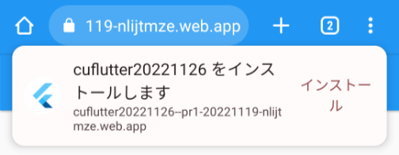
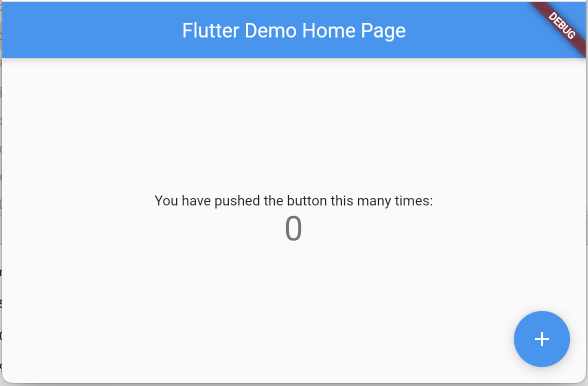

FirebaseとFlutterでクロスプラットフォーム開発
Update: 2022-11-26
コンピュータ・ユニオン関西IT支部 IT技術者・クリエイターカフェ 2022年11月 資料
このページの URL は https://pages.michinobu.jp/t/20221126firebaseflutter.html です。 GitHub Pages で作成しました。
サンプルコード
https://github.com/MichinobuMaeda/cuflutter20221126
は BSD ライセンスで公開しています。商用を含めてコピペ・流用可ですが、クラウド環境のキー等は書き換えてください。利用方法は README.md 「A. 開発環境」をご参照ください。
時間の制約により Docker, Git, Node.js, Material Design, VS Code などの説明は省きます。
A. 概要
Firebase
GCP: Google Cloud Platform のサービスで、以下のようなものがセットになった Serverless のシステム基盤です。
- Authentication: 認証基盤
- Firestore: トランザクションをサポートした NoSQL のデータベース
- Cloud Storage: 画像や文書などのファイルを格納するストレージ
- Cloud Functions: 単発の処理の実行環境（プロセスの常駐は不可で処理時間の制限有り）
- Hosting: 静的なファイルだけを置くことができる Webサーバ
- その他、メッセージ配信、メール送信（メールサーバは別途必要）、アクセス解析など
また、多数の言語向けのライブラリやローカルのテストのためのエミューレータが用意されています。対応している言語は JavaScript ( Web, Node.js ), Java ( Android, Server side ), Swift, Objective-C, Kotolin, Phthon, Unity, Go, PHP, C#, Ruby, Dart ( Flutter ) です。
Firestore と Cloud Storage は Authentication と組み合わせたアクセス制御が可能です。 Firestore はデータの内容に基づく動的な制御が可能で、アカウントやアカウントの権限・グループ等に紐付ける形で、読み書きそれぞれのアクセス権を定義できます。
Cloud Storage は AWS の S3 、 Cloud Functions は AWS の Lambda と同様のサービスです。
Firestore の RDB との違いは、
- スキーマの定義が不要
- 更新データのプッシュ配信が可能
で、チャットなどのアプリが容易に構築できます。
Flutter
Google が作ったモバイルアプリ用のフレームワークです。 JavaScript に似た Dart という言語を使います。 JavaScript と違って型の定義が必要なので Java にも似ています。 Flutter は一つのコードから以下の OS向けの実行モジュールを生成できます。
- Android
- iOS/iPadOS
- Web ( SPA / PWA: Progressiv Web Apps )
- Windows
- Mac OS
- Linux
サンプル: https://pages.michinobu.jp/honkipass/
SPA ( Single-Page Application ) は Gmail や Google Maps のようにほとんどの機能を JavaScript で実装し、HTMLのページの遷移は無しで動作する Web アプリケーションです。 サンプルコードの HTML
PWA は SPA をモバイルアプリのように動作させる仕組みです。 SPA との違いは以下のようになります。
- ホーム画面にショートカットではなくアプリとしてのアイコンを置くことができる。
- ブラウザのアドレスバーが表示されない。
- Android ではアプリを閉じていても通知メッセージの受信が可能。

Flutter の見た目の雰囲気は、次のどちらかを選択できます。
- Material ( Android 風 )
- Cupertino ( iOS 風 )
Flutter は OS やブラウザの UI部品を使わず、すべて自前で描画するので、 異なる OS でもほとんど同じ見た目になります。
参考: React Native との違い
Facebook ( Meta ) の React Native は OS の UI部品を使います。したがって、特に意識しなくても動作している OS の標準的な見た目になります。 対応する OS は Android と iOS/iPadOS だけで、デスクトップ OS には対応していません。 Web向けの React とロジックは共有できますが、プレゼンテーション層は完全には共有できないようです。
B. 環境の準備
以下は Linux や Mac OS 上で環境を準備する手順です。 Windows の場合は WSL: Windows Subsystem for Linux の利用をお勧めします。
- GCP のアカウントの作成（無い場合）
- Firebase プロジェクトの作成（他人と重複しないプロジェクト名が必要）
- 必要なパッケージのインストール
- Flutter のプロジェクトの作成
- GitHub のアカウントの作成（無い場合）
- GitHub のリポジトリの作成
- Firebase の設定の追加
1. GCP のアカウントの作成
- Gmail のアドレスが無ければ作成します。
- Android スマホ購入時に作成したものでもいいですが、仕事で使う場合は 2要素認証の設定がお勧めです。
- https://cloud.google.com/ から GCP のアカウントを登録します。
- Functions など Firebase の一部の機能のために支払の設定が必要です。
- 手順: 支払い方法の追加、削除、更新
- 各プロジェクトの支払いの有無と支払いを担当するアカウントは個別に設定できて、変更も可能です。
- 必ず予算の設定をしてください。 GCP 全体とプロジェクト毎の上限を決めることができます。
2. Firebase プロジェクトの作成
まず Firebase のコンソール からプロジェクトを作成します。
Firebase のプロジェクトを作成すると自動で同じIDの GCP のプロジェクトができます。 プロジェクトID を Flutter のパッケージ名と同じにする場合は、英小文字と数字だけにしてください。 本番環境とは別にテスト用のプロジェクトを作る場合は、「プロジェクトID-test」のようなIDにするとわかりやすいです。 Webを利用する場合はプロジェクトIDがそのままURLの一部になるので、ランダムな文字列などのてきとーなIDは後悔することになります。
今回は cuflutter20221126 としました。
次に以下の項目を設定します。
- Project settings
- Default GCP resource location: asia-northeast2 (大阪)
- Your apps: ボタンから Web app: "CU Flutter20221126" を作成します。
- 作成後に表示されるキーは後で使用します。
- Usage and billing
- Details & settings
- Functions を利用する場合は Spark (支払い無し)を Blaze (従量制課金) に変更します。
- Details & settings
- Build
- Firestore Database を作成します。とりあえず試用したい場合はアクセス制御無しの "test mode" でいいです。
- Readtime Database は使いません。旧バージョンのサービスとの互換性のためのもので、これを使う利点は無いです。
3. 必要なパッケージのインストール
以下は Mac OS でよく使われているパッケージマネージャの Homebrew を使った手順です。
Linux でも利用できます。
yum や apt などの Linux の標準のパッケージマネージャと違って、インストールする言語のバージョンの選択ができるのが便利です。
Flutter はバージョンアップが速いので、 FVM: Flutter Version Management を使います。
Firebase Tools のために Node.js が必要です。 Firebase Emulator のための Java は OS に入っている 17 がそのまま使えます。
##### 注 ##### Homebrew のインストールは必ず Homebrew の https://brew.sh/ サイトに掲載された最新の手順に従うこと。
$ /bin/bash -c "$(curl -fsSL https://raw.githubusercontent.com/Homebrew/install/HEAD/install.sh)"
Linux の場合は環境変数や build-essential の導入など追加の設定をしてください。手順は Homebrew のインストール時に表示されます。
##### 注 ##### Homebrew のインストール時に表示される案内に従って設定する。
##### 注 ##### build-essential は後続のパッケージのインストール時に必要（たぶん）。
$ echo '# Set PATH, MANPATH, etc., for Homebrew.' >> /home/user/.profile
$ echo 'eval "$(/home/linuxbrew/.linuxbrew/bin/brew shellenv)"' >> /home/user/.profile
$ eval "$(/home/linuxbrew/.linuxbrew/bin/brew shellenv)"
$ . .profile
$ sudo sudo apt-get install build-essential
Linux の場合は .profile に以下の行を追加します。
Mac OS の場合はパスが異なりますので、表示された手順に従ってください。
export NVM_DIR="$HOME/.nvm"
[ -s "/home/linuxbrew/.linuxbrew/opt/nvm/nvm.sh" ] && \. "/home/linuxbrew/.linuxbrew/opt/nvm/nvm.sh" # This loads nvm
[ -s "/home/linuxbrew/.linuxbrew/opt/nvm/etc/bash_completion.d/nvm" ] && \. "/home/linuxbrew/.linuxbrew/opt/nvm/etc/bash_completion.d/nvm" # This loads nvm bash_completion
##### 注 ##### .profile を反映
$ . ~/.profile
##### 注 ##### Homebrew で必要なパッケージをインストール
$ brew tap leoafarias/fvm
$ brew install fvm
$ brew install nvm
##### 注 ##### nvm インストール時に表示される案内に従って設定する。
$ mkdir ~/.nvm
$ nvm --version
0.39.2
##### 注 ##### Cloud Functions の現在(2022-11-03)の推奨の Node.js 16 をインストールする。
$ nvm install 16
##### 注 ##### Flutter の現時点(2022-11-03)の最新 3.3.7 をインストールする。
$ fvm install 3.3.7
$ fvm global 3.3.7
4. Flutter のプロジェクトの作成
Web だけ対応のプロジェクトを作成します。他のプラットフォームは後から追加できます。
参照: サンプルコード README.md B.1. Flutter のプロジェクトの作成
プロジェクトの作成後、
cd cuflutter20221126
fvm flutter run -d chrome
とすると Webブラウザが自動で起動し、サンプルのアプリが表示されます。 初回は Flutter の Web SDK のダウンロードに時間がかかります。

5. GitHub のアカウントの作成
私の場合は MichinobuMaeda
Workstations の環境に GitHub で使う氏名、メールアドレスを設定し、 SSH鍵を生成します。原則として SSH鍵のパスフレーズは設定してください。
git config --global user.name "氏名"
git config --global user.email "メールアドレス"
ssh-keygen
cat ~/.ssh/id_rsa.pub
SSH鍵 ( id_rsa.pub の内容 ) を GitHub のアカウント設定に追加します。
SSH鍵は作業環境ごとに作成して GitHub に登録してください。秘密鍵をコピーして使いまわすのは漏洩の事故の元になりますので、やらないでください。
コマンドラインから GitHub を操作する場合は
eval `ssh-agent`
ssh-add
とするか、毎回パスフレーズを入力するかどちらかしてください。 Mac OS の場合は
ssh-add
だけでだいじょうぶです。
6. GitHub のリポジトリの作成
Firebase のプロジェクト名や Flutter のパッケージ名と同じにしておくといいです。
リポジトリのURLは https://github.com/アカウント名/リポジトリ名 です。
リポジトリを作成すると設定の案内が表示されるので、それに従って
echo "# cuflutter20221126" >> README.md
git init
git add README.md
git commit -m "first commit"
git branch -M main
git remote add origin git@github.com:MichinobuMaeda/cuflutter20221126.git
git push -u origin main
7. Firebase の設定の追加
参照: サンプルコード README.md B.2. Firebase の設定の追加
Tag: firebase flutter github